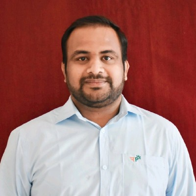
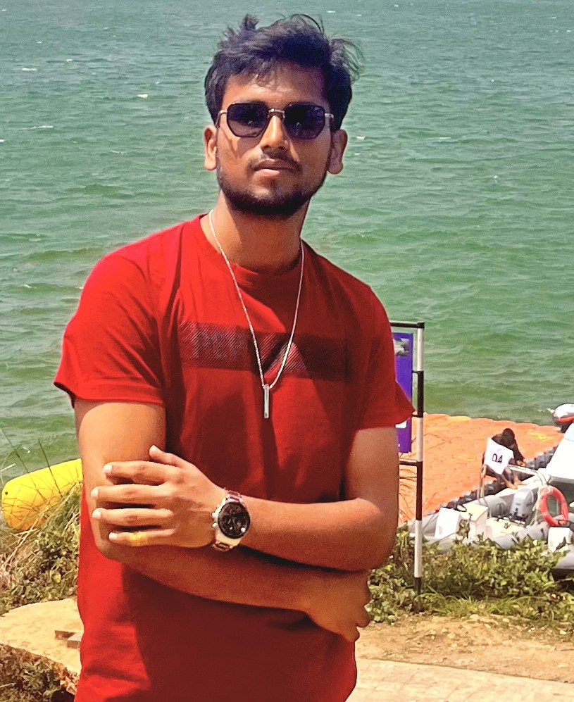
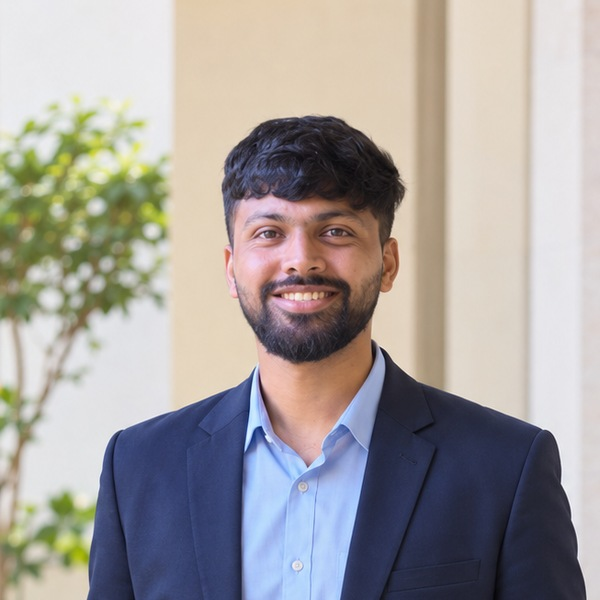
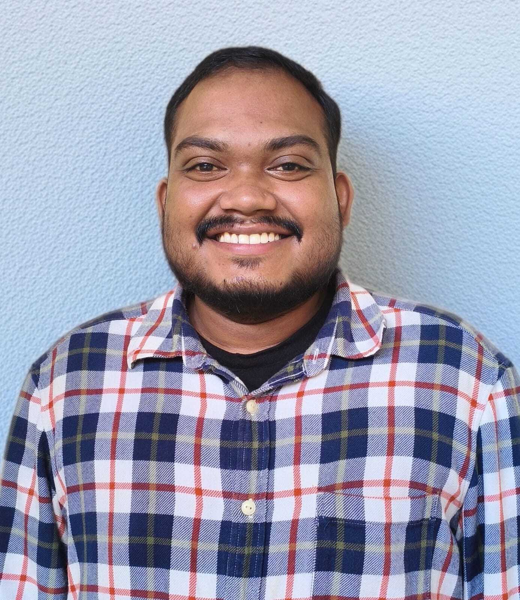
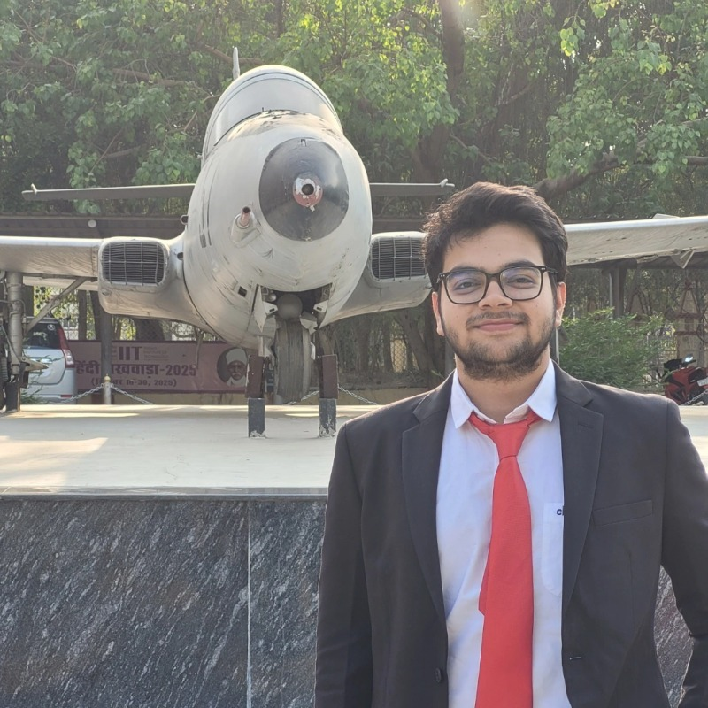

Principal Investigator
Dr. Lakshay
Department of Mechanical Engineering, IIT (BHU) Varanasi
Operations Research · Public Transportation Planning · Electric Mobility · Disaster Resilience
PhD scholars
Gyanesh Tripathi
Thesis
Optimal allocation of accident-relief facilities for a resilient railway network.
Gopi R.
Thesis
Multi-Level Decision-Support Frameworks for Sustainable Electrification and Operation of Urban Public Transport Systems
Doctoral researcher developing operations research and decision support frameworks for the sustainable electrification and operation of urban public transport systems — covering electric-bus route prioritization, charging infrastructure, charger scheduling, vehicle and crew scheduling, timetable regularization, emissions assessment, and planning under uncertainty.
Eshwar Dayal
Thesis
Developing an Effective and Sustainable Last-Mile Delivery
My work focuses on developing data-driven and optimization-based approaches for improving the efficiency and sustainability of emerging urban delivery systems. (Completed M.Tech under Dr. Lakshay before continuing as a PhD scholar.)
Suneet Singh
Thesis
Maritime freight and decarbonisation of ocean transport.

Akshay Khatod
Thesis (Proposed / Provisional)
AI-Enabled Decision Support for Plastic Waste Recycling
Developing AI-enabled decision-support and optimization frameworks for sustainable plastic waste recycling and reverse supply chains, integrating circular economy, EPR, logistics and recycling-process data for improved resource recovery and operational decision-making.
IDD (Integrated Dual Degree)

Divyansh Jaiswal
Thesis
Development of a Decision Support System for Integrated Bus Scheduling, Fleet Allocation, and Crew Scheduling in Delhi Transport Corporation
Working to implement reinforcement learning to obtain optimised solutions and compare results against previous optimization approaches.
M.Tech

Parthi Sai Pranay
Thesis
Signal Embedding for Predicting Return-to-Origin Behaviour from Sequential E-Commerce Clickstream Interactions
Working at the intersection of Machine Learning, E-commerce Analytics, and Supply Chain — exploring how customer clickstream behaviour can be used with sequential deep learning to identify early signals of Return-to-Origin (RTO) risk.

Mugidi Badri Narayana
Thesis
Integrated Crew Scheduling for Indian Railway (CRIS)
Developing an optimization-based railway crew scheduling and rostering model that efficiently assigns train duties to crew while satisfying operational, connectivity, and work-rule constraints.

Bikram Deb Chakraborthy
Alumni — M.Tech (completed)
Harsh H. Shah
Dev Vrat Pathak
Sankalp Jain
Lisa Khuntia
Bhavish Barak
Bukkehathi Ramji
Sanjeeb Gouda
Lavesh Agrawal
Shikha
Shubham
Nutan Sateesh Majji
Sai Sandeep Tammireddi
Shivam Verma
Collaborators & co-scholars
Researchers we've published and worked with across institutions.
Join the lab
Two PhD positions available
We're looking for candidates interested in operations research, public transportation planning, electric mobility, or sustainable logistics. If that's you, send your CV to lakshay.mec@iitbhu.ac.in.
Frequently asked questions
A degree in Industrial/Mechanical/Civil Engineering, Operations Research, Applied Mathematics, or a related quantitative field. Prior coding experience (Python/MATLAB) and interest in optimisation or data analytics is a strong plus, but not mandatory.
Email your CV, academic transcripts, and a short note on your research interests to lakshay.mec@iitbhu.ac.in, and separately apply through the official IIT (BHU) PhD admissions portal when the cycle opens.
Yes — PhD scholars typically receive an institute assistantship, and several lab projects carry additional project-linked funding depending on availability at the time of joining.
Yes, the lab regularly hosts M.Tech thesis students and undergraduate project interns. Reach out with your CV and areas of interest, ideally a semester before you'd like to start.